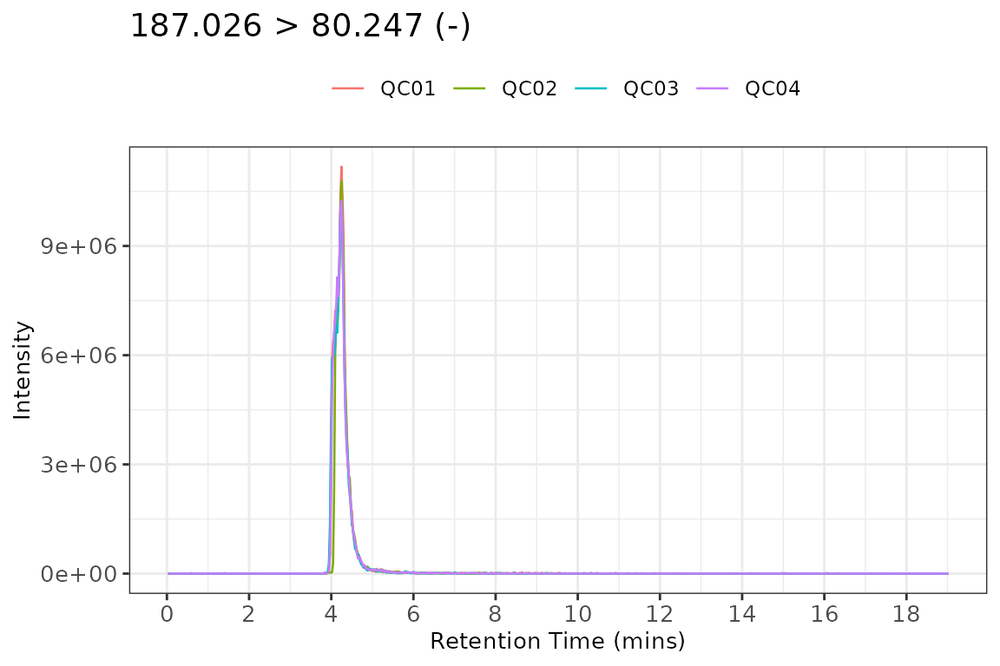
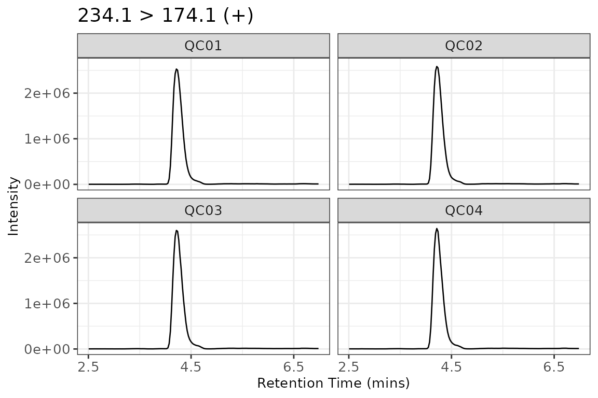
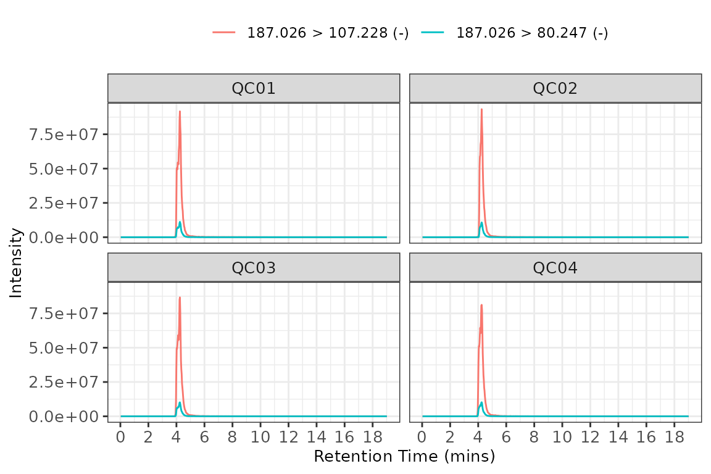
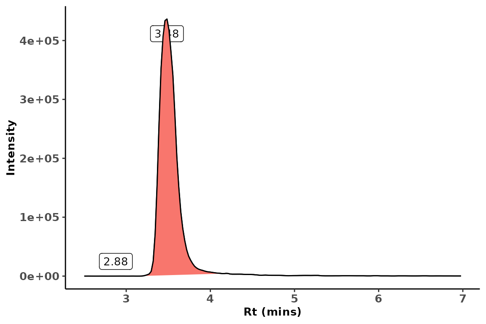
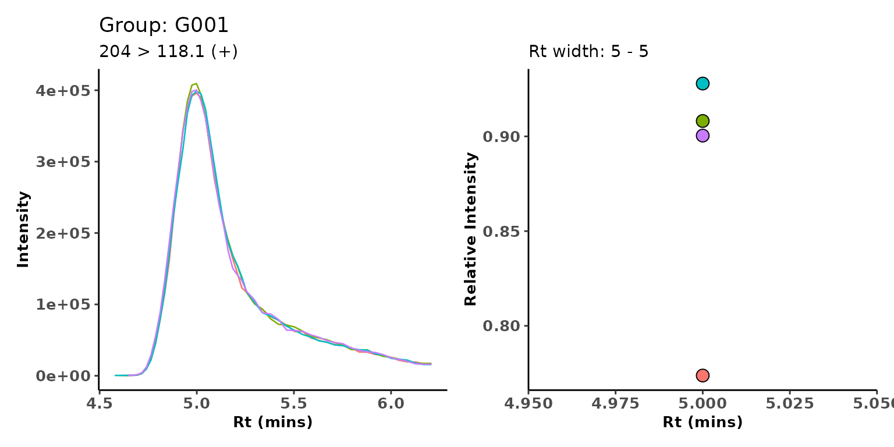

Introduction
sRm is package which contains a selection of functions and methods for handling, processing and visualising Selective Reaction Monitoring (SRM) or Multiple Reaction Monitoring (MRM) Liquid Chromatography Mass Spectrometry Data (LC-MS). The key distinction between SRM/MRM data and other LC-MS data is that the data is acquired as a time-series in the form of chromatograms; whereas other LC-MS (ie DIA, DDA, PRM) acquire data as a series of mass spectrums which can then be used to create chromatograms.
sRm is designed to make use of existing packages (ie, much of the heavy lifting is done by mzR and xcms) and create a simple S4 interface to the user for processing, visualisation and reporting.
sRm can be easily installed directly from GitHub using the remotes package.
remotes::install_github('wilsontom/sRm')Loading Data
Open and parse a series of .mzML files using the openSRM function.
library(sRm)
#> Loading required package: ggplot2
#> Loading required package: magrittr
chrom_files <- list.files(system.file('extdata/Shimadzu_LCD', package = 'sRm'), full.names = TRUE)
srmExp <- openSRM(chrom_files, source_type = 'lcd', backend = 'mzR')
srmExp
#> ── SRM Object ──────────────────────────────────────────────────── sRm v0.2.1 ──
#>
#> SRM File Inputs: 4
#>
#> Transitions measured: 107
#>
#> Object Size: 2.5 MbThe backend argument has to either be set as mzR or q3ML. In (hopefully) most instances mzR should be used as the backend, however due to a recent issue with backward compatability between pwiz and mzR (see here and here for more details) then the package q3ML is a pwiz independent parser for SRM-MS .mzML files.
Object Structure
The SRM object contains the following data;
-
meta
- a
tibbleof a minimal amount of meta data.
- a
-
transitions
- a
tibbleof all transitions names. Transitions are all given a numeric index to make accessing transitions easier for plotting.
- a
-
chroms
- a
tibbleof retention time (rt) and intensity (int) values for all imported SRM chromatograms.
- a
-
peaks
- a
tibbleof detected peaks for each SRM chromatogram.
- a
-
header
- a
tibbleof formatted header data frommzR::header()
- a
Plotting Data
plotSRM
The main feature of sRm is a series of plotting methods which are useful for visualising the raw data. The plotSRM method uses the numeric index of the transition. These can be found in the transitions slot. The plotSRM method has two type options; overlay and facet.
plotSRM(srmExp, index = 11, type = 'overlay')
plotSRM(srmExp, index = 11, type = 'facet')
plotParent
plotParent use a numeric value of parent mass as an input, and plots all SRM transitions which feature the selected parent mass.
plotParent(srmExp, 303)
Peak Detection
sRm utilises the xcms::peaksWithCentWave() function to detection chromatogram features.
srmExpPeaks <-
detectPeaks(srmExp,
snthresh = 5,
peakwidth = c(5,75))The plotPeakArea can then be used to determine the quality of the peak integration.
plotPeakArea(srmExpPeaks, index = 5, sampleName = 'QC02')
Peak Grouping
Once peak detection has been performed, the groupPeaks method can be used to assign features to corresponding peak groups. The only parameter that needs to be set is rt_tolerance which is the retention time width which will be used to group similar peaks together.
srmExpGroups <- groupPeaks(srmExpPeaks, rt_tolerance = 0.5)A summary of the peak groups can created using the groupSummary method.
group_table <- groupSummary(srmExpGroups)
head(group_table)
#> # A tibble: 6 x 8
#> # Groups: transition [3]
#> transition GroupID Rt Rtmin Rtmax Rtwidth SN count
#> <chr> <chr> <dbl> <dbl> <dbl> <dbl> <dbl> <int>
#> 1 204 > 118.1 (+) G001 5.00 4.58 6.21 1.63 121. 4
#> 2 204 > 118.1 (+) G002 6.50 6.37 6.99 0.621 16561. 3
#> 3 204 > 144 (+) G003 5.00 4.58 6.25 1.67 242567. 3
#> 4 204 > 144 (+) G004 6.73 6.37 6.99 0.621 14830. 4
#> 5 204 > 162 (+) G005 4.99 4.58 6.17 1.59 411 2
#> 6 204 > 162 (+) G006 6.50 6.17 6.99 0.828 5285. 5The output of the groupSummary method is a tibble so it can be easily processed further using dplyr to produce a list of the main GroupIDs which need exporting for further analysis.
For example, we can filter out any group which have low occupancy (and suspiciously high occupancy), have retention times in the wash phase of the chromatogram gradient or the peak width is too large.
number_of_samples <- nrow(srmExp@meta)
# Only keep groups with have Rt width of 3.0 minutes or less and total group occupancy is less than or equal to the total number of samples.
group_table_filtered <-
group_table %>% dplyr::filter(Rt >= 1.0 & Rt <= 16.0) %>%
dplyr::filter(Rtwidth <= 3) %>% dplyr::filter(count <= number_of_samples)The plotGroup method can also be used for a visual inspection of the group.
plotGroup(srmExpGroups, group = 'G001')
Create Group
There will occasions (ie, during standard optimisation) where using a data-driven approach to peak grouping (detailed above) is appropriate, but for targeted assays, the target retention time (Rt) is usually already known. Using the createGroup method, peak groups are created around the specified Rt at a given tolerance.
srmExpGroupTarg <- createGroup(srmExpPeaks, index = 1, rt = 3.2, width = 30, id = 'Group01')
srmExpGroupTarg@groups
#> # A tibble: 4 x 12
#> sampleID filter rt rtmin rtmax int area sn peakId transition index
#> <chr> <chr> <dbl> <dbl> <dbl> <dbl> <dbl> <dbl> <dbl> <chr> <int>
#> 1 QC01 SRM S… 3.27 2.97 3.88 1.21e6 1.70e7 1.21e6 1 303 > 70.… 1
#> 2 QC02 SRM S… 3.27 2.97 4.16 1.23e6 1.72e7 1.52e2 1 303 > 70.… 1
#> 3 QC03 SRM S… 3.27 3.01 4.02 1.20e6 1.69e7 1.20e6 1 303 > 70.… 1
#> 4 QC04 SRM S… 3.27 2.97 4.14 1.23e6 1.70e7 1.29e2 1 303 > 70.… 1
#> # … with 1 more variable: GroupID <chr>
patchwork::wrap_plots(
plotSRM(srmExpGroupTarg, index = 1),
plotGroup(srmExpGroupTarg, group = 'Group01'),
ncol = 1
)
Accessor Methods
All the available slots in the SRM object have a corresponding accessor method which can be used to retrieve the slot contents, instead of having to use; object@<slot_name>.
meta(srmExpGroups)
#> # A tibble: 4 x 6
#> sampleID sample_n Datestamp Timestamp Instrument Schema
#> <chr> <int> <chr> <chr> <chr> <chr>
#> 1 free_biltong… 1 <NA> <NA> Shimadzu inst… http://psi.hupo.org…
#> 2 free_biltong… 2 <NA> <NA> Shimadzu inst… http://psi.hupo.org…
#> 3 free_biltong… 3 <NA> <NA> Shimadzu inst… http://psi.hupo.org…
#> 4 free_biltong… 4 <NA> <NA> Shimadzu inst… http://psi.hupo.org…
transitions(srmExpGroups)
#> # A tibble: 107 x 3
#> transition filter index
#> <chr> <chr> <int>
#> 1 303 > 70.2 (+) SRM SIC Q1=303 Q3=70.2 Channel=1 Event=1 Segment=1 C… 1
#> 2 303 > 156 (+) SRM SIC Q1=303 Q3=156 Channel=2 Event=1 Segment=1 CE… 2
#> 3 303 > 286.2 (+) SRM SIC Q1=303 Q3=286.2 Channel=3 Event=1 Segment=1 … 3
#> 4 317.1 > 84.15 (+) SRM SIC Q1=317.1 Q3=84.15 Channel=1 Event=2 Segment=… 4
#> 5 317.1 > 170.2 (+) SRM SIC Q1=317.1 Q3=170.2 Channel=2 Event=2 Segment=… 5
#> 6 317.1 > 128.1 (+) SRM SIC Q1=317.1 Q3=128.1 Channel=3 Event=2 Segment=… 6
#> 7 304.1 > 156.1 (+) SRM SIC Q1=304.1 Q3=156.1 Channel=1 Event=3 Segment=… 7
#> 8 304.1 > 113.1 (+) SRM SIC Q1=304.1 Q3=113.1 Channel=2 Event=3 Segment=… 8
#> 9 304.1 > 287.2 (+) SRM SIC Q1=304.1 Q3=287.2 Channel=3 Event=3 Segment=… 9
#> 10 234.1 > 216.2 (+) SRM SIC Q1=234.1 Q3=216.2 Channel=1 Event=4 Segment=… 10
#> # … with 97 more rows
peaks(srmExpGroups)
#> # A tibble: 2,195 x 12
#> sampleID filter rt rtmin rtmax int area sn peakId transition
#> <chr> <chr> <dbl> <dbl> <dbl> <dbl> <dbl> <dbl> <dbl> <chr>
#> 1 QC01 SRM SIC Q1… 5.00 4.62 6.21 395845 1.15e7 62 1 204 > 118…
#> 2 QC02 SRM SIC Q1… 5.00 4.60 6.21 409379 1.17e7 111 1 204 > 118…
#> 3 QC02 SRM SIC Q1… 6.95 6.87 6.99 12458 1.22e5 12457 2 204 > 118…
#> 4 QC02 SRM SIC Q1… 6.50 6.37 6.70 18099 3.70e5 18098 3 204 > 118…
#> 5 QC03 SRM SIC Q1… 5.00 4.58 6.21 398475 1.15e7 62 1 204 > 118…
#> 6 QC04 SRM SIC Q1… 5.00 4.65 6.21 400348 1.18e7 250 1 204 > 118…
#> 7 QC04 SRM SIC Q1… 6.46 6.37 6.62 19130 2.90e5 19129 2 204 > 118…
#> 8 QC01 SRM SIC Q1… 5.00 4.65 6.17 361915 1.03e7 278 1 204 > 144…
#> 9 QC01 SRM SIC Q1… 6.66 6.37 6.99 16279 5.69e5 16278 2 204 > 144…
#> 10 QC02 SRM SIC Q1… 5.00 4.58 6.17 360968 1.03e7 360967 1 204 > 144…
#> # … with 2,185 more rows, and 2 more variables: index <int>, GroupID <chr>
header(srmExpGroups)
#> # A tibble: 428 x 9
#> sampleID filter tic bpi polarity Q1 Q3 CE transition
#> <chr> <chr> <dbl> <dbl> <chr> <dbl> <dbl> <dbl> <chr>
#> 1 QC01 SRM SIC Q1=204… 6.36e6 3.96e5 + 204 118. 12 204 > 118.…
#> 2 QC01 SRM SIC Q1=204… 5.90e6 3.62e5 + 204 144 10 204 > 144 …
#> 3 QC01 SRM SIC Q1=204… 1.87e6 1.11e5 + 204 162 10 204 > 162 …
#> 4 QC01 SRM SIC Q1=218… 4.95e7 5.63e6 + 218. 116 12 218.1 > 11…
#> 5 QC01 SRM SIC Q1=218… 9.56e7 1.34e7 + 218. 130. 13 218.1 > 13…
#> 6 QC01 SRM SIC Q1=218… 8.45e7 8.28e6 + 218. 158. 9 218.1 > 15…
#> 7 QC01 SRM SIC Q1=218… 7.90e7 7.76e6 + 218. 158. 10 218.1 > 15…
#> 8 QC01 SRM SIC Q1=218… 2.36e7 3.07e6 + 218. 88.1 19 218.1 > 88…
#> 9 QC01 SRM SIC Q1=218… 2.36e7 3.16e6 + 218. 88.1 18 218.1 > 88…
#> 10 QC01 SRM SIC Q1=233… 1.23e5 1.33e4 + 233. 130. 15 233.1 > 13…
#> # … with 418 more rows